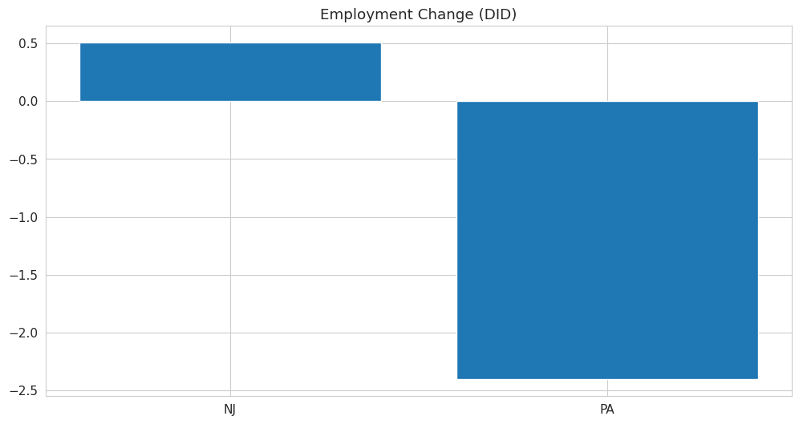
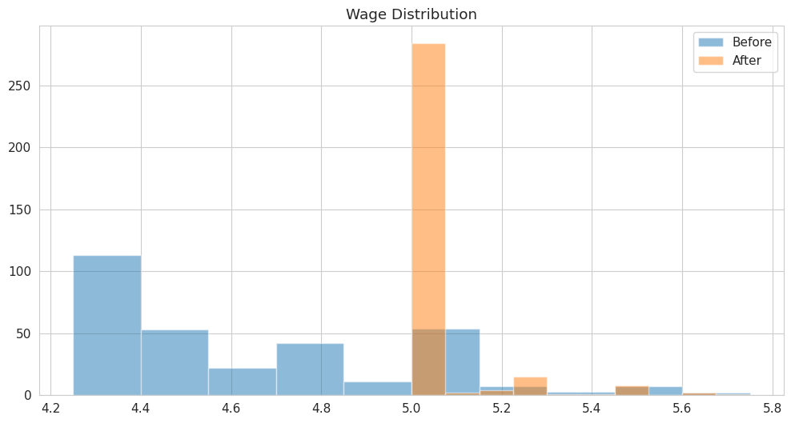

Replication of Card and Krueger (1994)
Minimum Wages and Employment
Introduction
This blog post studies the famous paper by Card and Krueger (1994). The authors ask a simple but important question:
Does increasing the minimum wage reduce employment?
Traditional economic theory says that when the minimum wage goes up, firms will hire fewer workers because labor becomes more expensive. However, Card and Krueger test this idea using real data.
They study a natural experiment in 1992:
- New Jersey increased its minimum wage from $4.25 to $5.05
- Pennsylvania did not change its minimum wage
By comparing these two states before and after the policy change, they use a method called difference-in-differences (DID) to estimate the effect of the minimum wage.
Main Analysis
I replicate the main result of the paper using the original dataset of fast-food restaurants.
First, I calculate employment using full-time equivalent (FTE):
- FTE = full-time workers + 0.5 × part-time workers
Then I compare employment before and after the policy.
Results
- New Jersey employment change: +0.51
- Pennsylvania employment change: −2.41
- Difference-in-differences (DID): +2.91

The figure shows that employment increased in New Jersey but decreased in Pennsylvania. This creates a positive difference-in-differences estimate.
Interpretation
This result is surprising.
According to standard theory, employment should decrease. However, the data shows the opposite:
The minimum wage increase did not reduce employment. It may have increased it.
I also run a simple regression, and the coefficient is about 2.94, which is very close to the DID estimate. This shows the result is consistent and robust.
Something Additional
Wage Changes
To confirm that the policy actually worked, I look at wages:
- Low-wage stores increased wages by about 0.81 (around 10%)
- High-wage stores had almost no change
This shows that the minimum wage policy was enforced.
Price Changes
I also analyze prices:
- New Jersey prices increased by 2.60%
- Pennsylvania prices decreased by 0.44%
This suggests that firms passed some of the higher labor costs to consumers.
Wage Distribution
The histogram shows a clear change:

- Before the policy, wages were spread out
- After the policy, many wages are clustered at $5.05
This confirms that the minimum wage became binding.
Why DID Works
The DID method works because it compares two groups:
- New Jersey (treatment group)
- Pennsylvania (control group)
It removes:
- Differences between states
- Common time trends
The key assumption is that both states would have followed similar trends without the policy. My results support this assumption.
Conclusion
My replication confirms the main finding of Card and Krueger (1994):
- Minimum wage increases did not reduce employment
- Wages increased for low-wage workers
- Prices increased slightly
This paper is important because it challenges traditional economic theory and shows that real-world labor markets can behave differently.